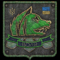
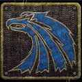

Las facciones juegan un papel muy importante en Anomaly. Todas ellas tienen un sistema de reputación que puede influir en la jugabilidad de diversas formas y maneras según el estado de dichas relaciones entre ellas y el jugador. Es posible aumentar o disminuir la buena voluntad hacia ellos en función del comportamiento, el nivel de hostilidad hacia ellos y la facción en la que se encuentre el jugador, permitiendo o negando al jugador el derecho a acceder a determinadas zonas y comerciantes sin tener que luchar por ello. En esto influye la relación del jugador con la facción que ocupa la zona. También hay que tener en cuenta que cuanto más cerca del centro de la zona esté una facción, mejor equipados estarán sus miembros.
Si el jugador está en buenos términos con una facción, tendrá acceso a todas las zonas que ésta ocupe en el mapa sin tener que presentar batalla. Además de poder visitar
Sus comerciantes para comprar y vender bienes y equipos. Médicos para comprar o vender suministros médicos y curar envenenamientos por radiación o heridas. Técnicos para reparar o mejorar el equipo. Sus miembros y personajes importantes para la asignación o realización de misiones.
Si la relación entre el jugador y una determinada facción es lo suficientemente buena, el jugador tendrá derecho a pedir a ciertos miembros que se unan a él como compañeros. Si el jugador tiene una mala relación con otra facción, sus miembros serán hostiles y dispararán a la vista.
La mayoría de las facciones del juego tienen un enemigo jurado que, pase lo que pase, será permanentemente hostil.
El deber y los bandidos La libertad y el deber El monolito y todas las demás facciones, excepto los acechadores zombi
El jugador tendrá varias formas de ganar reputación hacia una facción
Completando misiones Curando a miembros moribundos durante o después de un combate
En cuanto a los comerciantes y técnicos, los precios para reparar, vender o comprar equipo y bienes, pueden disminuir o aumentar dependiendo de la reputación del jugador con la facción o el rango personal. La rareza y calidad del equipo que los comerciantes venderán, también está influenciada por la reputación hacia la facción, el rango personal, la cercanía de la facción hacia el centro de la zona y la relevancia en el juego.
| Free Stalkers | Clear Sky | Ecologists |
|---|---|---|
|
|
|
|
| Freedom | Duty | Military |
|

|
|
|
| Bandits | Mercenaries | Monolith |
|
|

|
|